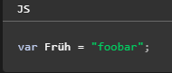

Javascript,
Estudo dirigido

Estudo dirigido
As variáveis são como recipientes que armazenam dados. Esses dados podem ser de diversos tipos, como números, textos (strings), valores booleanos (true ou false), objetos e muitos outros. Ao declarar uma variável, você está reservando um espaço na memória do computador para guardar um valor.
JavaScript é case-sensitive e usa o conjunto de caracteres Unicode. Por exemplo, a palavra Früh (que significa "cedo" em Alemão) pode ser usada como nome de variável. Mas a variável früh não é a mesma que Früh porque JavaScript é case sensitive.

Em JavaScript, a maioria das coisas são objetos. Um objeto é uma coleção de dados e/ou funcionalidades relacionadas (que geralmente consistem em diversas variáveis e funções — que são chamadas de propriedades e métodos quando estão dentro de objetos). Vamos trabalhar com um exemplo para entender como eles são.
// Criando um objeto literal
const pessoa = {
nome: "João",
idade: 30,
cidade: "Brasília",
// Um método (função dentro do objeto)
saudacao: function() {
console.log("Olá, meu nome é " + this.nome);
}
};
Objetos são uma parte fundamental do JavaScript e são usados para modelar dados e comportamentos de forma organizada e flexível. Ao entender como criar e usar objetos, você estará habilitado a construir aplicações JavaScript mais complexas e poderosas
As estruturas de decisão permitem que o seu código tome caminhos diferentes com base em determinadas condições. Elas são essenciais para criar programas mais dinâmicos e inteligentes, que podem se adaptar a diferentes situações
let idade = 18,
if( idade >= 18) {
console.log("Você é maior de idade." )
} else{
console.log("Você é menor de idade." )
};
let diaDaSemana = "sábado",
switch( diaDaSemana) {
case "sábado":
case "domingo":
console.log("Final de semana!" );
break
case "segunda":
case "terça":
case "quarta":
case "quinta":
case "sexta":
console.log("Dia de semana!" );
break
default:
console.log("Dia inválido." );
}